過去を遠くまで振り返れば、未来もそれだけ遠くまで見渡すことができる。
──ウィンストン・チャーチル
二〇億年前、われわれの先祖は微生物だった。五億年前は魚だった。一億年前は、ネズミみたいなものだった。一〇〇〇万年前には類人猿だった。一〇〇万年前には原人で、火を使うことを発見していた。われわれの進化の系譜の節目には、圧倒的な変化が見られる。現代では、変化の起こるペースが速くなっている。
──カール・セーガン
わたしたちの責任はただひとつ、自分たちより賢いものを作ることだ。それ以上の問題は、人間がどうこうできるものではない。……難しい問題などというものはない。ある水準の知性にとっては難しい、というような問題があるだけだ。［知性の水準を］ほんの少しだけ上に昇ってみたら、問題がとつぜん、「不可能」なものから「自明」なものに変わるかもしれない。かなり上まで昇ったら、全ての問題は自明のものになるだろう。
──エリエゼル・Ｓ・ユドコウスキー『特異点を見つめて（Staring Into the Singularity）』一九九六年
「未来は予測できない」とは、言い古された文句だ……。だが、……［この見通しが］間違っているときには、根本的に間違っているものだ。
──ジョン・スマート001
テクノロジーの加速度的な発展が進んでいるが、これは、わたしが収穫加速の法則と呼ぶものの影響であり、避けられない結果である。この法則は、進化のプロセスにおける産物が、加速度的なペースで生みだされ、指数関数的に成長していることを表すものだ。こうした産物の筆頭には、コンピューティングなどの情報産出テクノロジーがあげられる。その加速化の度合いは、ムーアの法則（後述）として知られるようになった予測をはるかに超えて大きくなっている。特異点とは、収穫加速の法則の動かしがたい結果であって、だからこそ、進化のプロセスがもつ性質を子細に調べることが重要なのだ。
秩序の性質 第一章では、パラダイム・シフトの加速化を実証するグラフをあげた（図３。パラダイム・シフトとは、ものごとを遂行するための手法や知的プロセスにおける大きな変化のこと。文字やコンピュータなどがその一例）。そのグラフでは、生命の誕生からパソコンに至るまで、生物とテクノロジーの進化において主要な事象と見なされるものが示されており、そこには間違いなく指数関数的な傾向が見てとれる。主要な事象が起こるペースが、どんどん速くなってきているのだ。

なにが「主要な事象」かとする基準は、思想家の作るリストによってさまざまに異なる。だが、各人が事象を選ぶ際に原則としているものを検討してみる価値はある。生物やテクノロジーの歴史において真に時代を画するような前進がとげられたときには、複雑さはつねに増加していると判断する研究者もいる002。生物やテクノロジーの進化において前進が見られたあとには、確かに複雑さが増してはいるようだが、この見方が絶対に正しいとは言い切れない。複雑さとはなにかということを、まずは考えてみよう。
驚くにはあたらないが、複雑性の概念は、至って複雑だ。複雑さの概念のひとつに、あるひとつのプロセスを表すのに必要最小限の情報量、というものがある。たとえば、あるシステム（コンピュータのプログラムや、コンピュータで使われるコンピュータ支援の設計ファイルなど）の設計があり、一〇〇万ビットのデータファイルで記述されるとしよう。その設計には、一〇〇万ビットの複雑さがある、と言える。ところが、その一〇〇万ビットが実際には、一〇〇〇ビットからなるパターンが一〇〇〇回繰り返されたものだ、ということに気づいたとする。そこで、繰り返しに着目し、反復されたパターンを取り除けば、設計の全体を、一〇〇〇ビットと少しだけで表現することができる。つまり、ファイルの大きさを一〇〇〇分の一に縮小できるのだ。
もっとも広く使われているデータ圧縮技術でも、情報の冗長性を見つけるという同じような手法が用いられている003。でも、こうやってデータを圧縮したあとで、さらにファイルを小さくまとめることのできる規則や手法が発見されることはないと言い切れるだろうか。ここでひとつ、わたしのもっているファイルが、例の「π」（3.1415...）を一〇〇万ビットの精度で記述したものだとしよう。ほとんどのデータ圧縮プログラムでは、この配列を認識することができず、一〇〇万ビットの情報は少しも圧縮されない。πを二進法で表現したビット情報は実質上ランダムで、どんなランダム性のテストにかけても反復パターンは見あたらないからだ。
しかし、ファイル（またはファイルの一部分）がじつはπを表していることが明らかになれば、ファイル（またはファイルの一部分）を、「一〇〇万ビットの精度をもつπ」のようにとてもコンパクトに表現することが簡単にできる。情報の配列をもっとコンパクトに表す方法を見落としていないかどうか、確証をもつことは絶対にできないので、どれくらいの量に圧縮しても、情報の複雑性の上限値を定めただけにすぎない。ノーベル賞物理学者のマレー・ゲルマンは、これとよく似た方法で、複雑性を定義している。一組の情報の「アルゴリズム的情報内容」（ＡＩＣ）とは、「標準的な汎用コンピュータが一連のビット情報〔当の「一組の情報」を二進数に置き換えたもの〕を印字して停止するような、最短のプログラムの長さ」であると定義した004。
しかし、ゲルマンの概念は十分に適切ではない。ランダムな情報をもつファイルなら、圧縮はできない。この点は、裏を返せば、数の配列が本当にランダムなのかどうかを判定する際の、重要な基準となる。それでも、ある設計になんらかのランダムな配列が必要なものだとしたら、その情報は、「ランダムな数の配列をここに置く」などといった簡単な指示で記述することができる。よって、ランダムな配列は、それが一〇ビットであれ一〇億ビットであれ、簡単な指示で記述されるものであって、相当量の複雑さを表すものではない。ここが、ランダムな配列と、目的をもってはいるが予測がつかない情報の配列との違いだ。
複雑性の性質をもっと深く知るために、岩の複雑さについて考えてみよう。岩にある全ての原子の特性（原子を構成する素粒子の正確な位置、角運動量、スピン、速度など）を記述するとしたら、大量の情報になってしまうだろう。一キログラムの岩には10の25乗個の原子があり、くわしくは次の章で説明するが、全体で最大10の27乗ビットの情報を保有することができる。これは、人間の遺伝コードの情報量の一億倍のさらに一〇億倍も多い005（遺伝コードを圧縮しなくても）。だが、実際には、この情報の大半はだいたいにおいてランダムで、ほとんど意味をもっていない。だから、岩を描写するには、たいていは、形状と、構成材料の種類を特定するだけでよく、格段に少ない情報でこと足りる。よって、岩には理論的には膨大な量の情報が含まれているにせよ、ふつうの岩の複雑さは、人間の複雑さにはとうてい及ばないと考えてさしつかえない006。
複雑性の概念に、いまひとつ、システムやプロセスを記述するために必要で、意味があり、ランダムではなく、それでいて予測不可能な情報の最小量、というものがある。
ゲルマンの定義では、一〇〇万ビットのランダムな列のＡＩＣ（アルゴリズム的情報内容）は、およそ一〇〇万ビットの長さになる。わたしはここで、ゲルマンのＡＩＣの概念に、ランダムな列を「ランダムなビットをここに置く」という単純な指示にそれぞれ置き換えるというアイデアを付け加えたい。
ところが、これでも十分ではない。任意のデータ列という別の問題がもちあがってくる。たとえば、電話帳の電話番号とか、放射線レベルや温度の周期的な観測とか。こういうデータはランダムではなく、データ圧縮手法を用いても、わずかしか量を減らすことはできない。それでも、これらは、複雑さという用語が一般的に指すような複雑さを表してはいない。ただのデータなのである。そこで、「任意のデータ列を置く」というまた別の簡単な指示に置き換えることになる。
一組の情報の複雑さを測定するための、わたしが提案した手法をまとめておこう。まず、その情報のＡＩＣを、ゲルマンの定義に従って考える。それから、ランダムな列を、ランダムな列を挿入せよという簡単な指示で置き換える。さらに、任意なデータ列についても同じことをする。これなら、複雑さを測る方法として、おおむね直感に沿っている。
生物の進化のプロセス、さらにはそれに続くテクノロジーの進化のプロセスなどにおけるパラダイム・シフトにおいては、ひとつ段階が進むごとに複雑さが増大していく、という考え方は、先に定義したように、妥当な見方である。たとえば、ＤＮＡの進化によってさらに複雑な有機体ができ、その生物学的な情報処理は、ＤＮＡ分子の柔軟なデータ保存によって制御される。カンブリア紀の大爆発〔カンブリア紀（約五億四〇〇〇万年から五億年前）に、多様な動物が短期に一気に出現した現象〕のころ、動物の各種の身体設計（体制）ができあがった（ＤＮＡ内に記された）。それで、進化のプロセスは、大脳の発達というさらに複雑な仕事に集中することができたのだ。テクノロジーについて言えば、コンピュータの発明によって、人間の文明では、ますます複雑な一連の情報を保存し操作する手段を獲得した。インターネットがコンピュータを広範に相互連結することにより、さらに規模の大きい複雑さを手にすることになった。
しかし、「複雑さを増す」ことそれ自体は、進化のプロセスの究極の目的でも最終的な産物でもない。進化の結果引き出されるのは、よりよい答えであって、より複雑な答えだとは限らない。優れた解決策が単純なものであることも、ときにはある。そこで、また別の概念を取り上げてみよう。それは、秩序だ。秩序は、すなわち無秩序の反対ではない。無秩序とは、事象がランダムな順序で起こることだとしたら、無秩序の反対は「ランダムでないこと」になってしまう。情報とは、データの配列であり、有機体のＤＮＡコードとか、コンピュータのプログラムのビットのように、その配列に意味がある。一方で「ノイズ」とは、ランダムな配列のことだ。ノイズはその性質からして予測不可能ではあるが、なんの情報ももってはいない。しかし、情報もまた予測不可能なものである。もしも、それまでのデータから以後のデータが予測できるのなら、以後のデータは情報ではなくなる。よって、情報もノイズも圧縮することはできない（さらにはまったく同じ配列を復元することもできない）。要素が交互に現れる予測可能なパターン（0101010...など）には秩序があると思うかもしれないが、最初の数個のビット以降にはなんの情報も含まれていない。
したがって、秩序立っているからというだけで、秩序があるとは言えない。秩序には情報が必要だからだ。秩序とは、目的にかなった情報のことである。秩序を測る基準は、情報がどの程度目的にかなっているかということだ。生命体の進化における目的は、生存だ。進化アルゴリズム（生物進化をシミュレートして問題を解決させるコンピュータ・プログラム）を、たとえば、ジェットエンジンの設計に応用する場合、その目的は、エンジンの性能や、効率や、あるいは他の条件を最適化することだ007。秩序を測ることは、複雑さを測るよりもさらに難しい。先に述べたように、複雑さを測る手法はいくつか提示されている。秩序を測るとなると、「成功」の程度を測る手段が必要となるが、それは、それぞれの状況に応じたものでないといけない。進化アルゴリズムを作成するにあたっては、プログラマーは、そのような成功を測る基準（「効用関数」と呼ばれる）を盛り込む必要がある。テクノロジーの発展における進化のプロセスでは、経済的な成功を測る基準を取り入れることになるだろう。
情報がより多くあるだけでは、必ずしもよりよく適合することにはならない。ときには、複雑さをさらに増すよりも単純にすることで、秩序がより深まり、目的によりよく適合できる。たとえば、新しい理論が生まれて、見たところばらばらのアイデアを、ひとつの大きなより一貫性のある理論へと結びつけるようになれば、複雑さは少なくなるが、「目的にかなった秩序」は増大する（この場合、目的とは、観測された現象を正確にモデル化すること）。実際のところ、より単純な理論を打ち立てることで、科学は前進していくものだ（アインシュタインも、「全てをできる限り単純にせよ。ただし単純すぎてもいけない」と言っている）。
この概念の例として重要なもののひとつに、ヒト科の進化において大きな節目となった出来事がある。親指の回転軸が移動して、周囲の環境をより正確に操作することができるようになったことがそうだ008。チンパンジーのような霊長類もものをつかむことはできるが、強力に握ったり、あるいは筆記や造形ができるほどの精密な協調運動を行ったりして、対象物を操作することはできない。親指の回転軸が変化したことで、動物としての複雑さはさほど増しはしなかったが、それでも、秩序は増大し、とりわけテクノロジーの発達を可能にした。ただし進化の歴史からは、一般的に秩序が増大する方向に向かう場合には、複雑さもさらに増すことが見てとれる009。
よって、問題の解決策を改善すると一般に秩序が増大する。ここで、問題を定義するという課題が残った。いかにも、進化アルゴリズム（さらには生物とテクノロジーの進化全般）の要諦となるのが、まさに、問題の定義なのだ（ここには効用関数も含まれる）。生物の進化においては、最大の問題はつねに、生き延びることだった。ある特殊な生態的地位では、このなによりも重要な課題がもっと具体的な目的に形を変える。たとえば、ある種の生物が極端な環境で生き残る能力を身につけるとか、擬態して捕食者から身を隠すとか。生物の進化が進み、人間に近づくと、目的がさらに進化して、敵よりも深く考え、それに応じて環境を操作する、という能力を身につけることを目指すようになってきた。
収穫加速の法則のこの側面が、熱力学の第二法則と矛盾するように思われるかもしれない。エントロピー（閉鎖系におけるランダム性）は減ることはできず、通常は増加する、というあの法則だ010。だが、収穫加速の法則は、進化に関係するものであり、進化は閉鎖系〔エネルギーも物質も出入りのない系〕ではない。進化は、大いなるカオスの中で進行するばかりか、そのただ中にある無秩序に依存し、その選択肢の中からいくつかを選び、多様化していく。さらに、進化のプロセスとともに、それらの選択肢の中から選ぶべき道をどんどんと切りつめ、秩序をいっそう深めていく。大きな小惑星が地球に何度も衝突したような危機においてさえ、一時的にはカオスが増大するが、最終的には、生物の進化によって作られた秩序がいっそう大きく深まる。
簡単にまとめると、進化によって秩序は高まるが、複雑さは増えることも減ることもある（だが通常は増える）。生命体であれテクノロジーであれ、進化の速度が増す理由の主たるものは、増大する秩序のうえに進化が成り立つことで、情報を記録して操作するいっそう洗練された手段を手に入れることができるというものだ。進化から革新的なものが生まれると、それがまた、進化を促し、進化の速度を速めることを可能にする。生命体の進化の場合、もっともそれが顕著に見られる初期の例がＤＮＡである。ＤＮＡは、生命の設計図を記録、保管し、そこからさらなる実験が行われる。テクノロジーの進化の場合は、人間が開発した情報記録の手法がつねに改良され、テクノロジーの前進をさらに促す。最初のコンピュータは、紙の上で設計され、人の手で組み立てられた。それが今では、コンピュータのワークステーションで設計され、次世代の設計の詳細の多くをコンピュータ自身が書き、製造は、全て自動化された工場で、人間の手をほとんど借りずに行われる。
テクノロジーの進化のプロセスは、その能力を指数関数的に向上させる。イノベーションを図る者は、性能を倍々に改良しようとする。イノベーションとは、加法的にではなく、乗法的に進むものなのだ。テクノロジーは、他の進化のプロセスと同じように、それ自身をもとにして発展していく。この様相は、エポック５において、テクノロジーがそれ自身の進歩を完全にコントロールするようになっても、依然として加速を続ける011。
収穫加速の法則の原則を、次のように要約できる。
・進化は正のフィードバック〔出力結果をさらに促進するように次の入力が行われるフィードバック〕を働かせる。進化のある段階で得られたより強力な手法が、次の段階を生みだすために利用される。第一章で述べたように、進化のそれぞれのエポックは、その前の段階の産物のうえに成果を積み重ねることで、いっそう急速に進歩してきた。進化は間接的に作用する。進化によって人間が生まれ、人間がテクノロジーを作り、今では、人間は、さらに前進したテクノロジーを用いて、テクノロジーの新世代を生みだそうとしている。特異点が到来するころには、人間とテクノロジーとの区別がなくなっている。人間が、今日機械と見なされているようなものになるからではなく、むしろ、機械のほうが、人間のように、さらには人間を超えて進歩するからだ。テクノロジーとは、たとえるならば、わたしたちをさらなる進化へと導いた親指だろう。そこでは進歩（秩序がさらに深まること）は、非常に遅い電気化学反応ではなく光の速さで作用する思考プロセスに基づく。進化のそれぞれの段階は、その前の段階の成果に基づくために、進化のプロセスが進む率は、時間とともに少なくとも指数関数的に増加する。時が経つにつれ、進化のプロセスに埋め込まれた情報の「秩序」（情報がいかに適切に目的にかなっているかを測る基準であり、進化においては生き延びること）は増す。
・進化のプロセスは閉鎖系ではない。進化は、より広い系にあるカオスを必要とし、その中において進化が起こり、多様な選択肢の中から進むべき方向が定まる。進化はまた、その秩序を増大させるため、進化のプロセスにおいては、秩序が指数関数的に増大していく。
・先の見解と関連して、進化のプロセスで得られる「収穫物」（速度、効率、コストパフォーマンス、または、プロセスの相対的な「パワー」など）もまた、時とともに少なくとも指数関数的に増大する。このことは、ムーアの法則に見ることができる。コンピュータのチップは、世代が新しくなるごとに（今ではおよそ二年ごと）、単位原価あたり二倍のトランジスタを搭載し、大幅に速く作動するようになるという法則のことだ（電子がチップ内やチップ間を移動する距離が小さくなることや、他の要因から）。これから説明していくが、こうした、情報ベースのテクノロジーの威力やコストパフォーマンスが指数関数的に成長するということは、コンピュータに限ったものではなく、基本的には全ての情報テクノロジーにも当てはまり、さまざまな尺度で測られた人間の知識についても言えることである。もうひとつ重要な点に注意したい。「情報テクノロジー」という用語が対象とする現象は、ますます幅が広くなり、最終的には、経済活動と文化活動の全般を含むようになるだろう。
・正のフィードバックはもうひとつある。ある特定の進化のプロセスの効率がよりよくなると──たとえば、コンピューティングの性能とコストパフォーマンスがさらに高くなると──より多くの資源が、そのプロセスのさらなる進歩のために供給される。その結果、指数関数的成長が第二のレベルに到達する。すなわち、指数関数的成長の率、つまりは指数自体が、指数関数的に成長する。例をひとつあげてみよう。図15「ムーアの法則──第５のパラダイム」にあるように、二〇世紀初頭ではコンピューティング（計算機械）のコストパフォーマンスが二倍になるには三年を要したが、二〇世紀の半ばにはそれが二年になり、今や一年になっている。チップの単位原価あたりの性能が毎年二倍になっているだけでなく、チップの製造数も指数関数的に多くなっている。それに伴い、コンピュータの研究予算も、この数十年の間に劇的に伸びている。
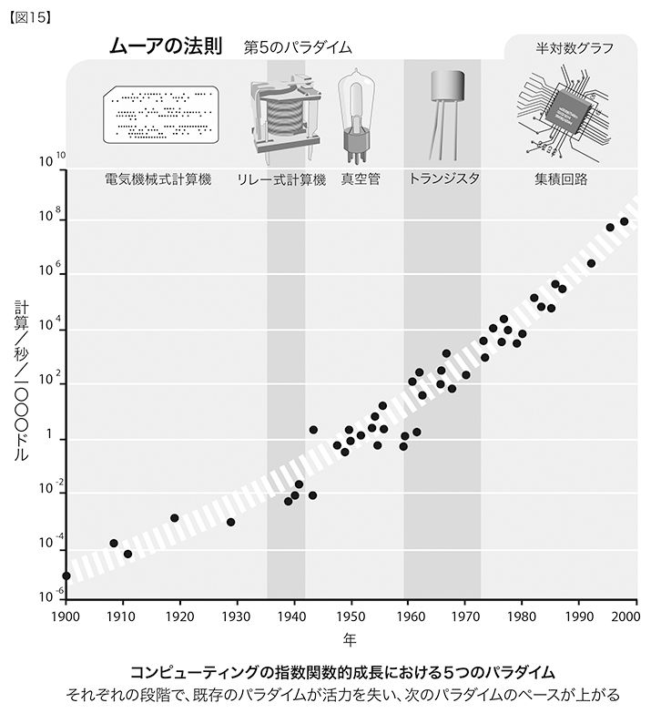
・生物の進化も、同様の進化のプロセスをたどる。まさに、これこそが、進化のプロセスの真髄なのだ。生物の進化は、完全に開かれた系で起こるために（進化アルゴリズムにある人工的な制約とは違って）、系の中のさまざまなレベルが同時に進化する。種の遺伝子がもつ情報がさらに大きな秩序に向かって進歩するだけでなく、進化のプロセスを推進している総体的なシステムそのものも、同じように進化する。たとえば、染色体の数や、染色体の中にある遺伝子の配列はいずれも、時とともに進化してきた〔進化的に新しい生物が、必ず多い染色体をもつということを意味しない。たとえばヒトの染色体数は四六だが、アメリカザリガニは二〇〇もある〕。さらに、進化によって、遺伝子の情報を過度の欠損から守るための手段も開発されてきた（突然変異は、進化による改良を進めるのに有益な仕組みであるために、わずかには許されているが）。これを実現する主な方法に、対になった染色体（相同染色体）に遺伝情報を繰り返し記す、というものがある。こうすることで、一方の染色体上のある遺伝子が損傷を受けても、対応する遺伝子は正常で有効に働く可能性が高くなることが保証されるのだ。男性のＹ染色体には対となる染色体がないが、それでも、情報をＹ染色体自身の上に繰り返すというバックアップ手段を編み出している012。ゲノムの中でタンパク質のコード（暗号）を指定しているのは、約二パーセントにすぎない013。その他の遺伝情報は、タンパク質をコードする遺伝子が、いつどのように発現する（タンパク質を生産する）かを制御する、精巧な仕組みを進化させてきた。そのプロセスは、まだわずかしか解明されていない。このように、進化のプロセスそのものも、突然変異が起こる率も含めて、時をかけて進化してきた。
・テクノロジーの進化も、同様の進化のプロセスをたどる。テクノロジーを生みだす種が初めて出現したことにより、テクノロジーの新たな進化のプロセスが誕生した。テクノロジーの進化は、生物の進化によってもたらされ、それを引き継ぐものなのだ。ホモ・サピエンスは数十万年をかけて進化した。人間が生みだしたテクノロジーの初期の段階（車輪や火や石器など）もさほど進歩は速くなく、進化して広く用いられるまでには数万年かかった。五〇〇年前になると、印刷機械などの、パラダイム・シフトを起こした製品がおよそ一世紀かかって広く使われるようになった。現在では、携帯電話やワールドワイドウェブなど、重要なパラダイム・シフトを起こした技術が広まるまでには、ほんの数年しかかかっていない。
・ある特定のパラダイム（問題解決の手法。より強力なコンピュータを作るために、集積回路上のトランジスタを小型化することなど）では、指数関数的成長が起こり、やがては潜在力が消費され尽くす。ここまでくると、パラダイム・シフトが起こり、さらに指数関数的成長が続く。
パラダイムのライフサイクル パラダイムの発展は三段階に分かれる。
１．遅い成長（指数関数的成長の初期段階）。
２．急速な成長（指数関数的成長の後期にくる爆発的な段階）。図５に示す、Ｓ字曲線の図にそれが見られる。
３．ひとつのパラダイムの成熟に伴い、発展が横ばいになる。
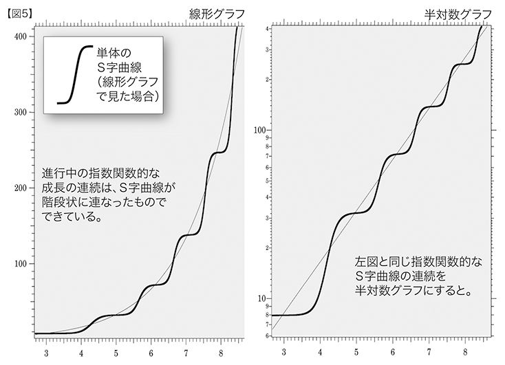
この三つの段階の進み方は、文字のＳを右に引き伸ばした形に似ている。Ｓ字曲線の図を見ると、進行中の指数関数的傾向は、Ｓ字曲線が階段状に連なったものであることがわかる。新しく起こるＳ字曲線のほうが速く（かかる時間、つまりｘ軸方向の長さが短くなる）、高くなる（性能、すなわちｙ軸方向の長さが、より幅広くなる）。
Ｓ字曲線は、生物の成長に典型的に見られる。比較的固定化された複雑なシステム（特定の種の集団など）が再生産され、激しい競争にさらされた生態的地位の中で、その場所にある有限な資源を取り合う。ある種が、新たに快適な環境に現れたときなどに、こうした状況になることが多い。その個体数は、しばらくの間、指数関数的に伸び、やがて横ばいになる。どのような個別のパラダイム（個々のＳ字曲線）にも成長の限界が見られるものだが、進化のプロセス（分子、生物、文化、テクノロジーのいずれであれ）を全体から見た場合、相次ぐパラダイムにおいてパワーと効率が発達し増大するために、それぞれの限界を超えた指数関数的な成長が続く。したがって、進化のプロセスにおける指数関数的な成長は、単数のＳ字曲線の中だけでなく複数のＳ字曲線にまたがる。この現象を示す現代でもっとも重要な事例が、これから説明するコンピューティングの五つのパラダイムだ。パラダイム・シフトの全体的な進化の推移は、連続したＳ字曲線を描いている。文字や印刷といった個々の主要な事象は、ひとつひとつの新たなパラダイムであり、新たなＳ字曲線となっている。
生物進化論の中の断続平衡説〔区切り平衡説ともいう〕では、進化は、急速な変化の時期のあとに相対的に均衡を保つ時期がくる、という推移をたどるとされている014。確かに、エポック的な事象を示した図を見ると、主要な事象が起こるのは、秩序がふたたび指数関数的に増大する（さらにたいていは複雑さも増す）時期であって、その後には、成長の速度は落ち、それぞれのパラダイムは漸近線（性能の限界）に近づく。このように、パラダイム・シフトを通じてなめらかな進化が続くとだけ予測するモデルよりも、断続平衡説のほうが、よりよい進化のモデルを提示できている。
ただし、断続平衡説における主要な事象は、より急速な変化を起こしはするが、瞬間的な飛躍をとげることはない。たとえば、ＤＮＡが登場して有機体の設計が急激に進化し改良され、複雑さが増大した（だが瞬時の飛躍ではない）。最近のテクノロジーの歴史においては、コンピュータが発明され、人間－｜機械文明が扱うことのできる情報の複雑さが急激に増大し、その変化はまだ続いている。第六章の「宇宙のインテリジェントな宿命」の節で論じる物理的限界に基づいて、宇宙のわれわれの領域にある物質とエネルギーをコンピューティングで飽和させるまでは、この急激な進化が漸近線に至ることはないだろう。
パラダイムのライフサイクルにおける、この第三の段階、すなわち成熟の段階では、次のパラダイム・シフトに向けた圧力が増す。テクノロジーを例にとれば、次なるパラダイムを創造するための研究費用が投資される。今日、三次元分子コンピューティングに向けて大がかりな研究が行われているのがその実例だ。実際には、あと少なくとも一〇年は、フォトリソグラフィ〔基板上に電子回路を露光形成する技術〕を用いて平面の集積回路上でトランジスタを縮小させるパラダイムが続くのではあるが。
だいたいにおいて、パラダイムがコストパフォーマンスの漸近線に近づくころには、次の技術的なパラダイムがすでにその市場のニッチを狙い始めている。たとえば、一九五〇年代、技術者たちは真空管を縮小させてコンピュータのコストパフォーマンスを大幅に改善しようとしていたが、ついには、この努力も限界を迎えた。その時点の一九六〇年ころには、トランジスタが、携帯ラジオという強力なニッチ市場を生みだし、続いて、コンピュータの真空管に取って代わるものとして使われるようになった。
進化のプロセスにおける指数関数的な成長を支える資源は、比較的潤沢に存在する。そのひとつに、進化のプロセスそのものの（どこまでも増大する）秩序がある（先に指摘したように、進化のプロセスの産物は、ますます秩序立ったものになっていく）。進化のそれぞれの段階では、さらに強力な道具が作られ、次の段階で用いられる。その例として、生物の進化では、ＤＮＡが出現して、より強力でスピードの速い進化の「実験」が可能になった。もっと最近の例を出せば、コンピュータ支援設計ツールによって、コンピュータの次世代の開発速度が増した。
秩序が指数関数的成長を続けるために必要なもうひとつの資源が、環境の「カオス」だ。カオスの中で進化のプロセスが発生し、さらなる多様性に通じる選択肢から、向かうべき道を選ぶ。カオスが変化を与えてくれるために、進化のプロセスがより強力で効率のよい解決策を見出すことができるようになるのだ。生物の進化では、多様性を生みだす要因のひとつに、有性生殖を通じて遺伝子を混ぜ合わせ組み合わせるという作用がある。有性生殖自体も、進化におけるイノベーションのひとつで、生物の適応のプロセス全体を加速化させ、無性生殖の場合よりもさらに多様な遺伝子の組み合わせをもたらした。多様性を生みだす他の要因には、突然変異と、つねに変化している環境条件とがある。テクノロジーの進化においては、人間の発明の才と、変わりやすい市場条件とが結びついて、イノベーションが前進を続けている。
フラクタルなデザイン 生物系がもつ情報内容について不思議でならないのが、比較的少ない情報しかもっていないゲノムが、人間などというシステムをどうやって生みだすことができるのか、ということだ。人間は、それを描写する遺伝情報よりもはるかに複雑だというのに。この問題を解くひとつの方法が、生物のデザインを「確率的フラクタル」と見なすことだ。そもそも、決定論的フラクタルというものがある。これは、ひとつのデザインの要素（「初期形」と呼ばれる）が、多数の要素（「生成形」と総称される）で置き換えられるデザインのことだ。フラクタル的操作をもう一回繰り返すと、もともと生成形であったもののそれぞれの要素自体が今度は初期形になり、それがまた生成形の要素で置き換えられる（二回目の初期形〔つまり一回目の生成形〕と同形〔相似形〕で、前よりも小さいサイズになって）。このプロセスは何度も繰り返され、そのつど、新たに作られた生成形の要素がそれぞれ初期形となり、新たなスケールの生成形によって置き換えられる。フラクタルが新たに生成、拡大するたびに、複雑さが明らかに加味されるが、付加的なデザイン情報が必要とされるわけではない。これが、確率的フラクタルになると、不確定の要素が加わる。決定論的フラクタルでは、描写されたデザインはいつでも前の段階と同じものに見えるが、確率的フラクタルではデザインができるごとに、特徴は似ていても、違って見える。確率的フラクタルでは、生成形の要素それぞれが次の操作に使われる確率は一より小さい。こうして、できあがってくるデザインは、より有機的な感じがする。確率的フラクタルは、画像プログラムで作られる山や雲や海岸や木の葉などの有機的な風景に、現実的なイメージをもたせるために用いられている。確率的フラクタルの特徴のうちで重要なのが、とてもわずかなデザイン情報から、変化に富んだ細部を含むはっきりとした複雑さを大量に生成できるという点だ。生物も、同じ原則を利用している。遺伝子がデザイン情報を供給するが、有機体にある細部は、遺伝子のデザイン情報をはるかに超えている。
脳のような生物システムがもつ細部の量を誤って解釈する人もいる。たとえば、それぞれのニューロンにある全ての微細構造（樹状突起やスパインの一本一本など）の構成そのものが、正確に設計されていて、システムが機能するのにぴったりにできていないといけない、というように。しかし、脳のような生物システムの働きを理解するには、システムの設計原則を理解する必要がある。その原則は、遺伝情報が、フラクタルに似たプロセスをあのように繰り返すことで生成した極度に複雑な構造よりも、はるかに単純だということだ（すなわち、情報量がはるかに少ない）。ヒトゲノム全体には、八億バイトの情報しかなく、データ圧縮をすればたったの三〇〇〇万から一億バイトになってしまう。これは、完全に形成された人間の脳にある、全てのニューロン間結合と神経伝達物質の濃度パターンによってやりとりされる情報量の、一億分の一程度でしかない。
収穫加速の法則にある原則が、第一章で論じたエポックにどのように当てはまるのかを考えてみよう。アミノ酸を結合してタンパク質を作り、ヌクレオチドを結合してＲＮＡの配列を作ることで、生物の基本的なパラダイムができあがった。（エポック２で）自己複製したＲＮＡの配列（のちにはＤＮＡの配列）によって、進化の実験の結果を記録するデジタルな手法がもたらされた。時を経て、理性的な思考（エポック３）と対向性のある付属物（親指）とを併せもった種が進化して、生物からテクノロジー（エポック４）へと移行する抜本的なパラダイム・シフトが起こった。やがて来る重大なパラダイム・シフトは、生物的な思考から、生物的思考と非生物的思考とを混合したもの（エポック５）への移行となるだろう。その移行の過程には、生物の脳のリバースエンジニアリングによって得られる「生物的な感化を受けた」プロセスも含まれるだろう。
これらのエポックが訪れる時期を見てみると、それもまた、継続的な加速化のプロセスの一部であることがわかる。宇宙の誕生から生命体の進化が最初の一歩をふみだす（原始細胞、ＤＮＡ）までに何十億年とかかったが、その後の進歩は加速化されている。カンブリア紀の大爆発の時代には、主要なパラダイム・シフトは、ほんの数千万年ごとに起こっている。時が下り、数百万年の間に原人、旧人などヒト科の進化が進み、ほんの数十万年を経てホモ・サピエンスが出現した。テクノロジーを創造する種が出現すると、指数関数的なペースが急速に高まり、ＤＮＡがタンパク質の合成を指示するという形での進歩では追いつかなくなり、進化の主役は、人間が作りだしたテクノロジーに交代した。だからといって生物の（遺伝的な）進化が続いていないわけではないが、秩序を向上させる（あるいはコンピューティングの有効性と効率性を高める）という点で、進化を先導する立場にもはやない015。
前の章で述べたように、新しいパラダイムの全体としての採用率は、テクノロジーの進歩率と並行して上昇しており、現在のところ、一〇年ごとに二倍になっている。つまり、新しいパラダイムを採用するまでの時間が、一〇年ごとに半分になっているということだ。この率でいけば、二一世紀のテクノロジーの進歩は、二〇〇世紀分の進歩に相当する（線形的展望）ということになる（西暦二〇〇〇年の進歩率での計算016）。
ＥＮＩＡＣの計算機には真空管一万八〇〇〇本が使われていて重量が三〇トンであるのにたいし、未来のコンピュータは、真空管は一〇〇〇本だけで、重量は一・五トンほどになるだろう。
──「ポピュラー・メカニクス」誌 一九四九年
天文学が望遠鏡のことを研究するものではないように、コンピュータ・サイエンスも、もはや、コンピュータのことを研究するものではなくなっている。
──Ｅ・Ｗ・ダイクストラ〔科学技術計算用プログラミング言語、ＡＬＧＯＬの開発者で構造化プログラミングの提唱者。オランダ生まれの世界的コンピュータ開発者〕
特異点がもつ意味についてさらに深く考える前に、収穫加速の法則が当てはまるテクノロジーを幅広く検討してみよう。指数関数的な傾向のうち、もっとも広く知られているのが、ムーアの法則と呼ばれるものだ。一九七〇年代の半ば、集積回路の主要な発明者であり、後にインテル社の会長となったゴードン・ムーアは、二四か月ごとに、集積回路上に詰め込むことができるトランジスタは二倍になる、と発言した（六〇年代半ばには、見積もりを一二か月としていた〔その後、一八か月に再び短縮した〕）。これにより電子が移動する距離が短くなるので、回路の速度は速くなり、コンピューティング能力全体もさらに高まる。その結果、コンピューティングのコストパフォーマンスが指数関数的に成長する。およそ一二か月で二倍になるという速度は、わたしが先ほど述べたパラダイム・シフトが二倍になる速度（およそ一〇年）よりも速い。通常、情報テクノロジーの性能についてのさまざまな基準──コストパフォーマンス、帯域幅、容量──が二倍になる時間は、およそ一年だとわかっている。
ムーアの法則を推し進めている主な要因は、半導体の加工寸法だ。これは、各次元において、五・四年ごとに半分に縮小している（図６）。チップは機能面では二次元なので、一平方ミリあたりの素子の数は二・七年ごとに二倍になることになる017。図６は、過去のデータと、半導体産業界が作成した二〇一八年までを予測するロードマップ（半導体製造技術研究開発組合作成の、国際半導体技術ロードマップ［ＩＴＲＳ］）とを組み合わせたものだ。

ＤＲＡＭ（ダイナミックランダムアクセスメモリ）の、一平方ミリあたりのコストも低下している。一ドルあたりのＤＲＡＭのビット数は、たったの一・五年で二倍になっている018（図７）。
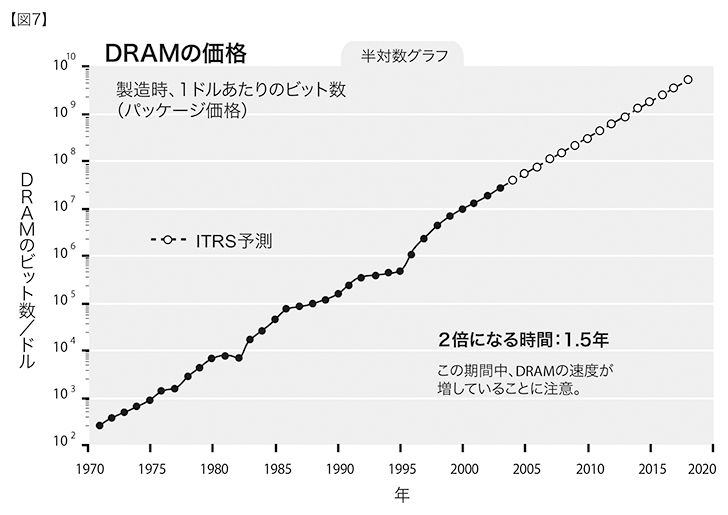
同様の傾向がトランジスタにも見られる。一九六八年には、一ドルでトランジスタが一個買えた。二〇〇二年には、一ドルで約一〇〇〇万個のトランジスタが買えた。ＤＲＡＭの技術革新は独特で特殊なので、トランジスタの平均価格が半減する時間は、ＤＲＡＭの場合より多少長く、およそ一・六年となる019（図８）。
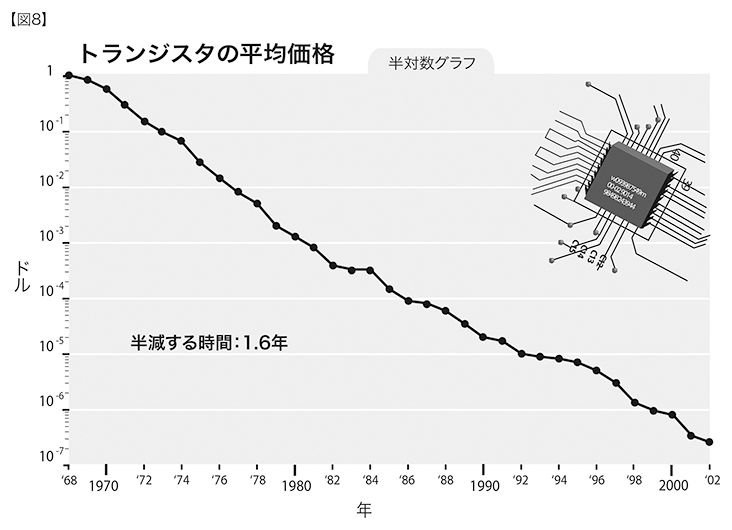
半導体のコストパフォーマンスがこうして非常になめらかに加速化していったのは、さらに小さな面積上での加工技術（加工寸法で規定される）が何段階も進歩していった結果である（図９）。主要な加工寸法は、今では、一〇〇ナノメートルを少し下回っている。この数値は、「ナノテクノロジー」の入り口だとされている020。
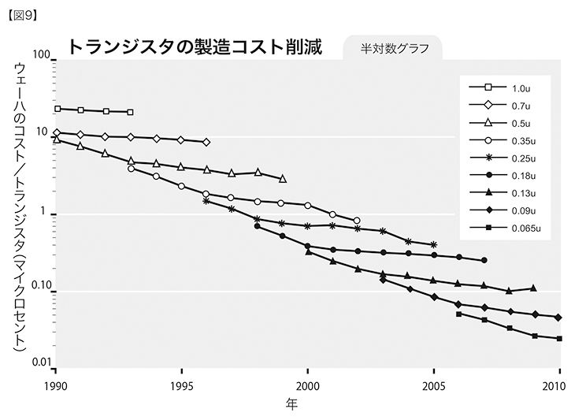
ガートルード・スタインの「バラはバラでありバラであって……」と歌った詩とは違い、トランジスタはトランジスタはトランジスタ、どこまでいっても変わらない、というわけにはならない。トランジスタが小さくなり価格が安くなるにつれ、過去三〇年の間に、速度もおよそ一〇〇〇倍速くなっている（図10）。これもまた、電子の移動距離が短くなったからだ021。
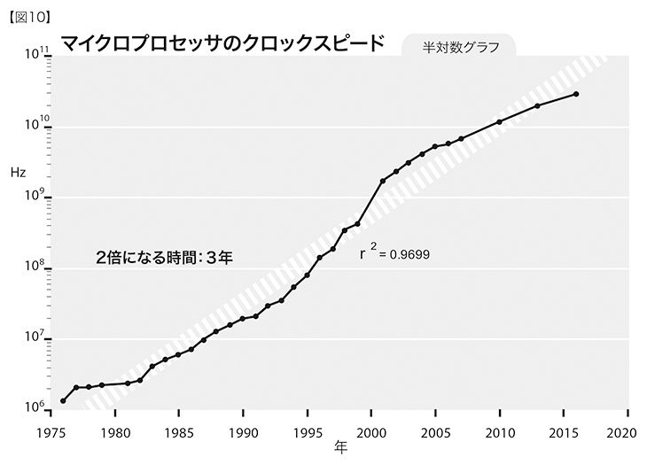
価格が低く、周波数が高いトランジスタの指数関数的傾向も含めると、トランジスタの周波数あたりのコストが半減する時間は、たったの一・一年になる（図11）。トランジスタの周波数あたりのコストは、速度と容量のどちらも考慮に入れるので、コストパフォーマンスを測るより正確な全体的基準になる。ただし、トランジスタの周波数あたりのコストには、コンピューティングの効率を改善する、設計のより高度なレベルでの刷新（マイクロプロセッサの設計など）は考慮に入っていない。
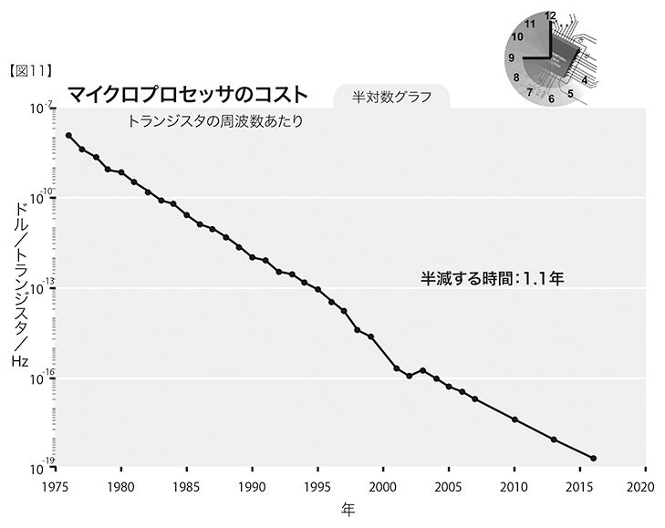
インテルのプロセッサに内蔵されているトランジスタの数は、二年ごとに二倍になっている（図12）。コストパフォーマンスを押し上げている要因には、クロックスピードの上昇、マイクロプロセッサ一個あたりのコストの削減、プロセッサの設計の刷新などがある022。
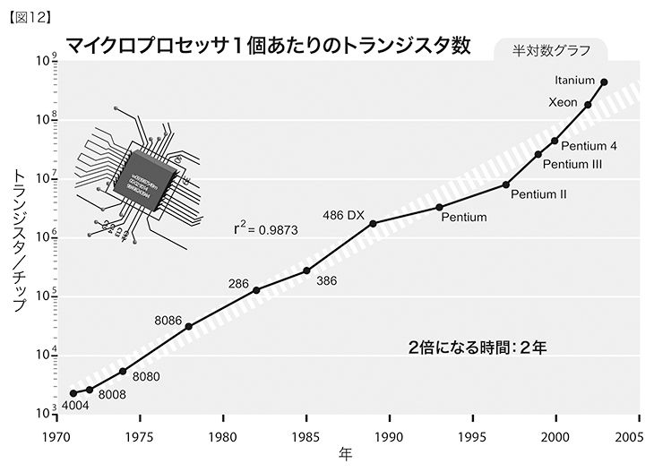
ＭＩＰＳ〔Million Instructions per Secondの略。コンピュータの処理速度を表す単位。一ＭＩＰＳでは、一秒で一〇〇万回の命令を処理できる〕で測ったプロセッサの性能は、一プロセッサあたり、一・八年ごとに二倍になっている（図13）。ここでも、プロセッサあたりのコストが、この期間を通じて減少していることに注目023。
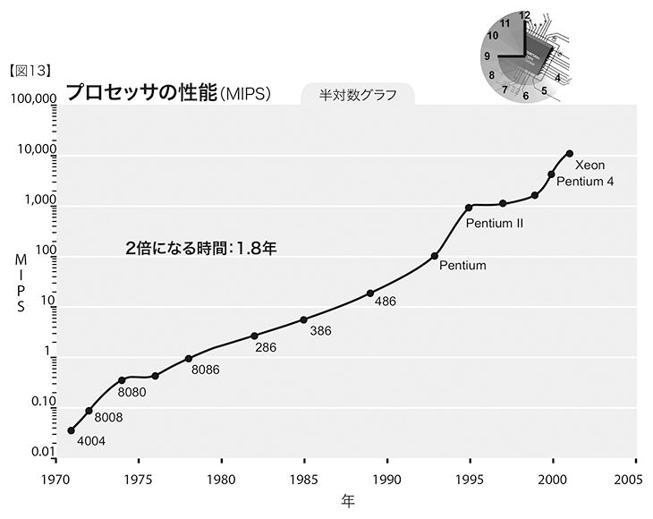
この業界での四〇余年の経験を振り返り、一九六〇年代の終わりごろの学生時代に使っていたマサチューセッツ工科大学（ＭＩＴ）のコンピュータと、近ごろ使ったノートブックとを比較してみよう。一九六七年当時、何百万ドルもするＩＢＭ７０９４を使うことができた。メモリは、三二キロ（三六ビット）ワード〔ワードはＣＰＵとメモリの間でやりとりされるデータの基準単位。一ワードの長さは各種あるが、この場合は三六ビット〕のメモリと、〇・二五ＭＩＰＳのプロセッサ速度のマシンだった。二〇〇四年には、二〇〇〇ドルのパソコンを使っていた。ＲＡＭが五億バイト、プロセッサの速度がおよそ二〇〇〇ＭＩＰＳだ。大学のコンピュータのほうが一〇〇〇倍ほども値段が高いので、ＭＩＰＳあたりのコストを比較すると、だいたい、八〇〇万対一となる。
新しいほうのコンピュータは二〇〇〇ＭＩＰＳの処理速度だが、その分のＭＩＰＳあたりコストは、一九六七年に使っていたコンピュータと比べて２の23乗も低い。処理速度が三七年間で二三回も倍加した、あるいは、一九・三か月ごとに二倍になったことになる。二〇〇四年ごろのコンピュータでは、ＲＡＭの容量が約二〇〇〇倍も増えたことや、ディスク記憶容量が大幅に増大したこと、命令セットがより強力になったこと、さらには、通信速度が迅速になり、ソフトウェアの性能が増したことなどを考慮に入れると、処理速度が二倍になるまでの時間は、さらに短くなる。
情報テクノロジーのコストがこのように大幅にデフレになっている一方、需要は追いつけないほどに高い。出荷されたビット数は、一・一年ごとに二倍になっている（図14）。これは、ビットあたりのコストが半減する時間の一・五年よりも短い024。その結果、半導体業界は、一九五八年から二〇〇二年までの年間収益を見ると、年間成長率が一八パーセントにもなっている025。情報テクノロジー（ＩＴ）業界全体が国内総生産に占める割合は、一九七七年の四・二パーセントから、一九九八年の八・二パーセントまで伸びている026。ＩＴが及ぼす影響は、あらゆる経済分野においてますます大きくなっている。製品やサービスの価格に占めるＩＴの割合は、多くのカテゴリーにおいて、急速に高まっている。テーブルや椅子などといった一般製品でさえ、コンピュータによる設計や、在庫－｜調達システムのプログラム、組み立て工程で使われる自動生産システムといった、ＩＴによる付加価値を含んでいる。
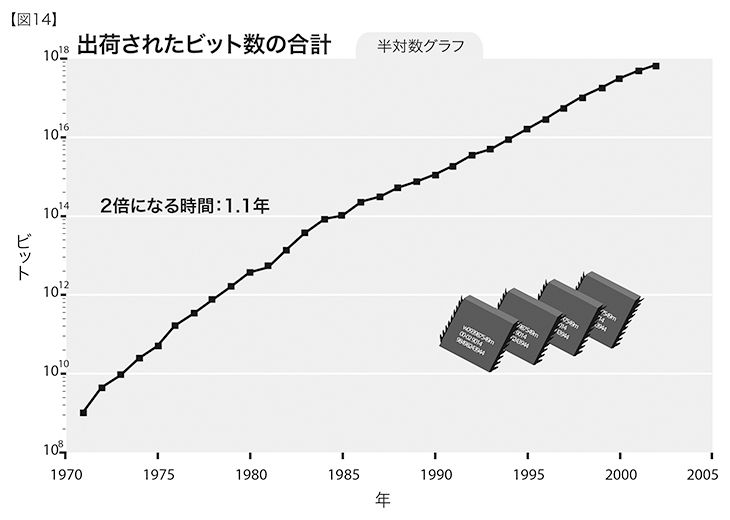
第五のパラダイム027
ムーアの法則は、じつのところ、コンピューティング・システムにおける第一のパラダイムではない。二〇世紀全般にわたる四九の有名なコンピューティング・システムとコンピュータのコストパフォーマンス──一〇〇〇恒常ドル〔インフレの影響を除いたドル数値〕あたりの毎秒の命令回数で測定したもの──をグラフ化した次の図15を見れば、よくわかる。
この図で明らかなように、集積回路が発明されるずっと以前より、コンピューティング（機械計算）のコストパフォーマンスで指数関数的な成長を示した四つのパラダイムが確かに存在していた。電気機械式計算機、リレー〔電気信号で電気回路の開閉を行う装置〕式計算機、真空管、単体のトランジスタがそうだ。しかも、ムーアの法則で終わりではない。ムーアの法則は、二〇二〇年より前にＳ字曲線の終端に達すると今のところ予測されているが、引き続き、三次元の分子コンピューティングが出現し、第六のパラダイムとなって指数関数的成長を続けるだろう。
図中の、対数目盛りでプロットされた指数関数的曲線には、指数関数的な成長の二つのレベルが表れていることに着目してほしい。つまり、指数関数的成長の率そのもの（指数）に、穏やかではあるがはっきりとした指数関数的な成長が認められる（半対数グラフにおける直線は、ふつうの指数関数的成長を表し、上方にカーブしている曲線は、さらに大きな指数関数的成長を表す）。グラフを見るとわかるように、コンピューティングのコストパフォーマンスが二倍になるまでに、二〇世紀の初めには三年かかり、中盤では二年、現在ではおよそ一年になっている。
ハンス・モラヴェックは、先の図に似た図16を提示している。種類は異なるが部分的に重複する過去のコンピュータを対象とし、異なる時点における複数の傾向線（傾斜）をグラフ化している。先の図と同じく、傾斜角度は時とともに増し、さらなる指数関数的成長を表している028。
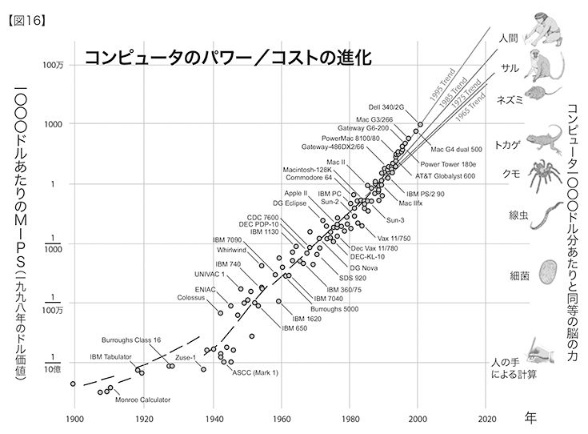
こうしたコンピューティング性能の傾向予測を今世紀末までに広げると、次の図17のように、この一〇年以内にスーパーコンピュータが人間の脳の性能に達し、二〇二〇年ころまでにパソコンもそこに達することになる。あるいは、もっと早くにそうなるかもしれない。その時期は、人間の脳の性能をどれくらい控えめに見積もるかによって変わってくる（人間の脳のコンピューティング速度については、次章で検討する）。
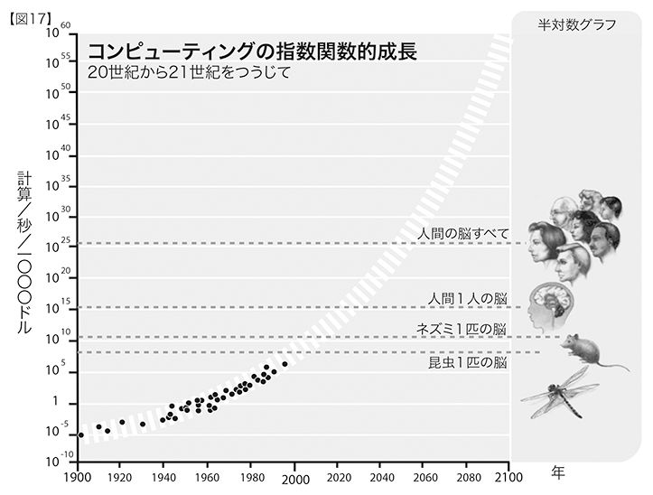
コンピューティングの指数関数的成長は、進化のプロセスから得られる指数関数的成長の収穫を示す、驚くべき量的な事例である。コンピューティングの指数関数的成長を、その加速度的なペースで表現することもできる（図18）。一ＭＩＰＳのコンピューティングが一〇〇〇ドルで買えるようになるまでには九〇年かかったが、今では、五時間ごとに、一〇〇〇ドルあたりのＭＩＰＳが一ずつ増加している029。

ＩＢＭの「ブルージーン／Ｐ」スーパーコンピュータは、二〇〇七年に発表される時点で、一〇〇万ギガフロップス（一〇億単位での浮動小数点演算／秒）、すなわち、10の15乗cps〔cpsは一秒あたり計算回数〕の計算能力をもつ予定だ030。これは、人間の脳を模倣するのに必要な10の16乗cpsの一〇分の一である（第三章を参照）。この指数関数的曲線を引き伸ばせば、二〇一〇年代の初期に、10の16乗cpsを達成するだろう。
先ほども述べたように、ムーアの法則は、一定のサイズをもつ集積回路上のトランジスタの数といった限られた対象についてのものにすぎない。さらには、トランジスタの加工寸法といったさらに狭い範囲に限定されることもある。しかし、コストパフォーマンスを追跡するのなら、最適な基準は、単位原価あたりのコンピューティング速度になる。この指標なら、多様なレベルの「賢さ」（イノベーション、すなわちテクノロジーの進化）を考慮に入れることができる。集積回路に関連するあらゆる発明の他にも、コンピュータの設計においては、何層もの改善が積み重ねられてきているのだ（パイプライン処理、並列処理、命令ルックアヘッド、命令とメモリのキャッシュなど多数）。
人間の脳は、非常に効率の悪い、電気化学的なデジタル制御のアナログコンピューティング処理を用いている。脳の計算の大半は、ニューロン間結合（シナプス結合）によって行われ、毎秒約二〇〇回の計算速度しかない（ひとつの結合ごとに）。これは、現在の電子回路の速度より一〇〇万倍以上も遅い。しかし、人間の脳は、三次元の超並列組織を構成していることから、驚異的な力をもっている。三次元回路を人工的に構成するためのさまざまなテクノロジーはすでに準備段階に入っている。それについては次章で説明しよう。
コンピューティングのプロセスを支える物質とエネルギーの分量にはもともと限界があるのではないか、という疑問もあるだろう。これは重要な問題だが、次章でも述べるように、二一世紀の終わりごろまでこの限界に達することはない。個別のテクノロジーのパラダイムにおいて見られるＳ字曲線と、幅広い領域にわたるテクノロジーにおいて進行中の進化のプロセス、たとえばコンピューティングなどに見られる継続的な指数関数的成長とを区別することが大切だ。ムーアの法則をはじめとする個別のパラダイムは、最終的に、指数関数的成長がそれ以上不可能な水準に必ず到達する。ところがコンピューティングの伸びは、基盤となるパラダイムを次々と取り替え、当面のところ、現行の指数関数的成長が持続する。
収穫加速の法則に従い、パラダイム・シフト（イノベーションともいう）によって、あらゆる個別のパラダイムのＳ字曲線は、次なる指数関数曲線へと替わっていく。古いパラダイムが本質的な限界に到達すると、三次元回路のような新たなパラダイムがそれに取って代わる。こうしたことは、コンピューティングの歴史において、少なくとも四回はすでに起こっている。サルのようなヒト以外の種では、個々の動物が道具を作ったり使ったりする技能を獲得することはＳ字形の学習曲線で表現されるが、それはとつぜん途絶えてしまう。これとは反対に、人間が生みだしたテクノロジーは、それが誕生したときから、指数関数的なパターンを描いて成長と加速を続けてきた。
文明は、なにも考えずに行えるような重要な作業の数を増やしていくことで進展する。
──アルフレッド・ノース・ホワイトヘッド〔数学・哲学者〕一九一一年031
過去ずっとそうだった姿より、現在の姿のほうが、そのものの本質に近い。
──ドワイト・Ｄ・アイゼンハワー
収穫加速の法則は、全てのテクノロジー、さらにはどのような進化のプロセスにも当てはまる。情報をベースとするテクノロジーでは、その成果を測る明確な指標があるために（一ドルあたりの毎秒の計算回数、一グラムあたりの毎秒の計算回数など）、この法則をとても正確に図表化することができる。収穫加速の法則から見て指数関数的成長をするとうかがわれる事例は大量にある。その分野は、あらゆるたぐいの電子工学、ＤＮＡ解読、通信、脳スキャン、脳のリバースエンジニアリング、人間の知識の量と範囲、テクノロジーのサイズの急速な縮小化まで、さまざまだ。最後にあげた、サイズの縮小化の傾向は、そのまま、ナノテクノロジーの登場に結びついている。
来るべきＧＮＲ（遺伝学Genetics、ナノテクノロジーNanotechnology、ロボット工学Robotics）の時代（第五章を参照）の要因となるものは、コンピューティングの指数関数的な爆発だけでなく、多数のテクノロジーの前進が絡み合い、相互作用や無数のシナジーが生まれることのほうが大きい。これらの数々のテクノロジーの根底にある指数関数的成長を表す曲線上の点ひとつひとつには、革新と競争にまつわる熾烈な人間ドラマが隠れている。そのような混沌とした過程が、これほどなめらかで予測可能な指数関数的な傾向に落ち着くとは、まことに驚くべきことである。しかもこれは偶然の一致ではなく、進化のプロセスにもともと備わった特徴なのだ。
ヒトゲノムの解読が一九九〇年に開始されたころ、当時の解読のスピードからすると、プロジェクトを完了するには何千年もかかるという批判が聞かれた。ところが、一五年の計画だったプロジェクトは、予定よりも多少早く終了し、二〇〇三年に報告書の第一草稿が提出された032。ＤＮＡ解読にかかる費用は、ひとつの塩基対あたり、一九九〇年の約一〇ドルから、二〇〇四年には数セントになり、その後も継続して急激に低下している033。
これまでに蓄積されたＤＮＡ解読データの量も、なめらかな指数関数的成長を示している034。解読能力が向上していることを表す最近の著しい例が、ＳＡＲＳウィルスの配列の解読だ。ＳＡＲＳウィルスを同定してから解読までにたったの三一日しかかからなかった。これに比べて、ＨＩＶウィルスの解読には一五年以上もかかっている035。
もちろん、ＲＡＭのような電子メモリにも、指数関数的成長が見られると考えてよい。ただし、その半対数グラフ（図19）の傾向が、真空管から、トランジスタ単体、さらには集積回路へと、異なるテクノロジーのパラダイムを通じてなめらかにつながっていることに着目してほしい036。
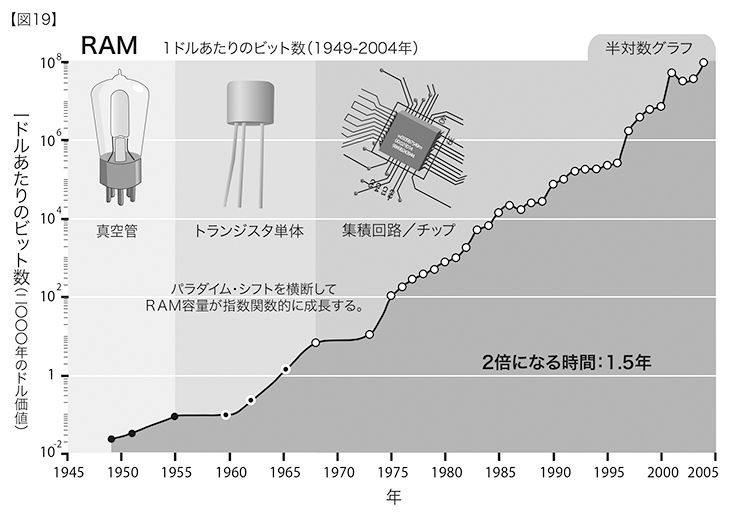
一方で、磁気（ディスクドライブ）メモリのコストパフォーマンスの成長は、ムーアの法則にのっとっていない。こちらの指数関数的な傾向は、磁気基盤にデータを詰め込む技術を表している（図20）。これは、集積回路にトランジスタを載せるのとは技術的にまったく異なる課題であり、扱う会社も技術者の種類もまったく違う037。
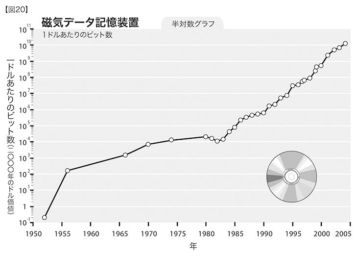
通信テクノロジー（情報をやりとりする手段）における指数関数的成長は、コンピューティングの処理や記憶手段における成長よりも、長年にわたってさらに爆発的になっており、その影響も同様に大きい。繰り返し述べるが、通信テクノロジーの進歩は、集積回路上のトランジスタを縮小させるだけよりも、もっと広範なものである。ファイバーオプティクス〔ガラス、プラスチックなどのファイバーを通して光を伝達する技術。光通信などに利用される〕や、光スイッチ、電磁テクノロジーなどの各要素が、加速度的に成長してきているのだ038。
図21は、ホスト（ウェブサーバのコンピュータ）数に基づいたインターネットの総体的な成長率を示している。二つのグラフ線は、同じデータを記しているが、ひとつは縦軸に対数目盛り、もうひとつは線形目盛りを用いている。前にも説明したが、テクノロジーは指数関数的に進んでいるのに、われわれはそれを線形的な域内で経験する。ほとんどの人の目からすれば、インターネットの世界では、一九九〇年代の半ばまでは、なにも起こっていなかった。するとどこからか、ワールドワイドウェブとｅメールが忽然と目の前に現れた。しかし、インターネットが出現して世界的な現象になることは、インターネットの先駆けだったＡＲＰＡＮＥＴ（米国国防総省高等研究計画局ネットワーク）に始まる八〇年代初めからの指数関数的な傾向のデータを調べれば、すでに予測可能なことだった039。
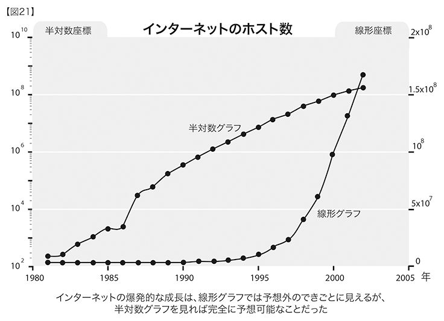
サーバの数だけでなく、インターネット上の実際のデータトラフィック（通信量）も、毎年二倍になっている040（図22）。
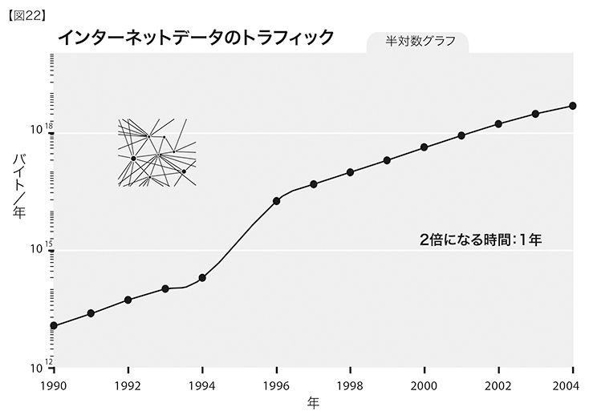
この指数関数的成長に伴い、インターネットの基幹通信回線（インターネットに実際に使われる基幹通信チャネルの中で最速とうたわれるもの）のデータ通信速度そのものも、指数関数的に速くなっている。図23を見てほしい。Ｓ字曲線が連なって進行する様子を実際に見ることができる。新しいパラダイムによって加速度がいっそう高まるが、パラダイムの活力がなくなると横ばい状態になる。そこで、パラダイム・シフトが起こり、新たな加速が始まる041。
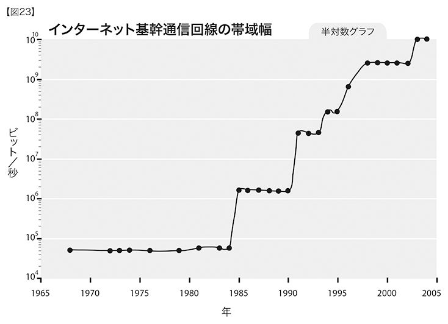
二一世紀において重要な意味をもつことになるもうひとつの傾向が、小型化への広範な取り組みだ。電子工学と機械工学のいずれにおいても、幅広い領域のテクノロジーにおける主要な加工寸法が縮小しつつある。それも、指数関数的な率で。現時点で、テクノロジーは長さにして、およそ一〇年につき四倍ずつ縮小している。こうした小型化は、ムーアの法則を推し進める力となっているが、あらゆる電子システムのサイズにも反映されている。その一例が、磁気記憶装置だ。さらに、電子素子のサイズにおいても同様の縮小が見られる。電子素子のサイズを表した図24を見てほしい042。
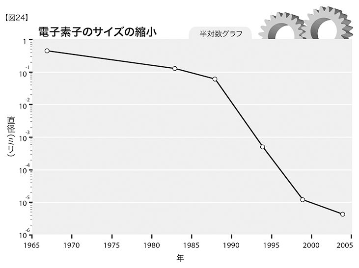
広範囲のテクノロジーにおける極小の加工寸法が、マルチナノメートルの領域（一〇〇ナノメートルより小さい）にますます近づくにつれ、ナノテクノロジーへの興味が急速に高まってきた。ナノテクノロジー・サイエンスに関する論文引用数やナノテクノロジー関連の特許数は、この一〇年で指数関数的に増えている043。
第五章でくわしく見ていく予定だが、遺伝学（あるいは生命工学）革命が、その能力とコストパフォーマンスを指数関数的に増大させ、生物学の分野に情報革命を引き起こしている。これと同様に、ナノテクノロジー革命により、材料や機械システムについての情報統御が急速に前進するだろう。ロボット工学（あるいは「強いＡＩ」）革命には人間の脳のリバースエンジニアリングがかかわっている。つまり、人間の知能を情報という観点から理解し、そこで得た洞察を、ますます強力になるコンピューティングのプラットフォーム（基盤技術）に結びつけるということだ。このように、遺伝学、ナノテクノロジー、ロボット工学といった、互いに重なり合う三つの変革が、二一世紀の前半を席巻し、情報革命のさまざまな面を表すようになる。